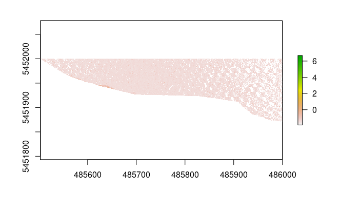
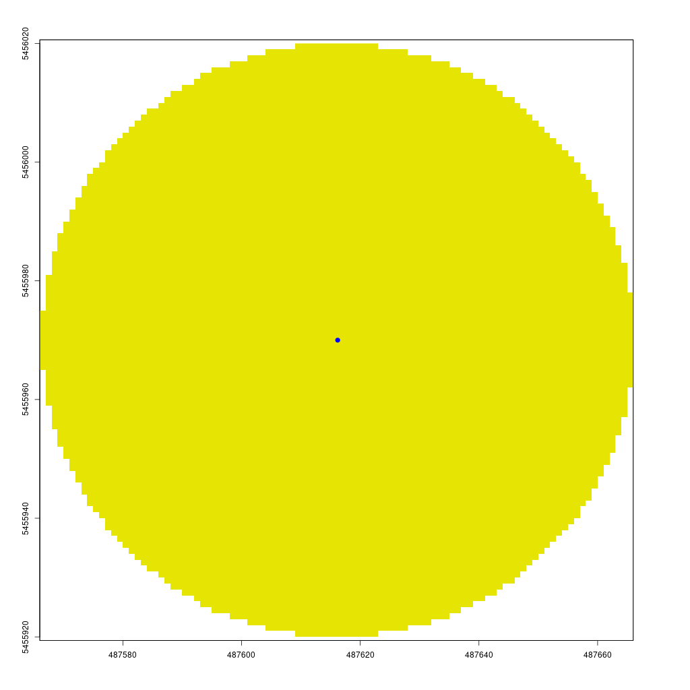
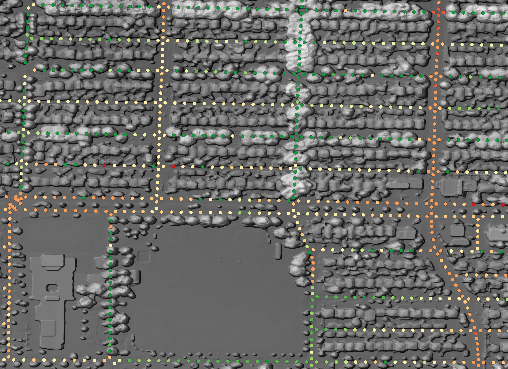

Visible Greenness Exposure
Exposure to residential greenness or green spaces such as parks or gardens are beneficial for multiple measures of health (Markevych et al. 2017; Labib, Lindley, and Huck 2020). Greenness and greenspace will be used as synonyms henceforth. Greenspace exposure can be categorized into three types: (a) availability, referring to the physical amount of greenspace, (b) accessibility, meaning the spatial proximity to greenspace, and (c) visibility, referring to the visual perception of greenness (Labib, Lindley, and Huck 2020).
In our recent publication (in submission) we measured greenness taking a top-down, bird’s eye view approach using remote sensing derived NDVI, to approximate the availability of greenness. Furthermore, we used a distance weighted road network to calculate potential neighborhood exposure models around participants place of residency, therefore also accounting for accessibility.
The next step will be, to combine greenness visibility with our potential neighborhood exposure models.
In this post, I will therefore demonstrate how to download and prepare all necessary files and methods needed for a visibility analysis. In the first part I demonstrate data acquisition and processing, in the second part I will explain the main functions used for the visibility analysis. My implementation of these methods is very light weighted and fast, while still maintaining high resolution. The functions presented in this post for computing a viewshed based Green Visibility Index (GVI), have also been included in the GVI R package.
Libraries
First load all packages. If one of these packages has not been installed, use the install.packages() function.
terra is a relatively new R package that replaces the well known raster. I have found terra to work much faster for most tasks.
library(dplyr)
library(sf)
library(ggplot2)
library(ggthemes)
library(terra)
library(lidR)
library(future)
library(data.table)Data
The data is being stored in a different directory than this R project. Therefore I first need to assign my working directory.
workdir <- "/media/sebastian/Red/Vancouver"DTM
First, we need to download the digital terrain model (DTM) generated from LiDAR data collected in 2013 for the City of Vancouver from the City of Vancouver Open Data Portal.
# Download DTM as .zip
download.file("https://webtransfer.vancouver.ca/opendata/TIF/DEM_2013_TIF.zip",
destfile = file.path(workdir, "dtm.zip"))
# Unzip
unzip(zipfile = file.path(workdir, "dtm.zip"), exdir = "Data")
# Delete .zip
unlink(file.path(workdir, "dtm.zip"), recursive = TRUE)DTM <- terra::rast(file.path(workdir, "DEM/DEM_2013.tif"))
plot(DTM)
LiDAR
Next, we will load the shapefile for the LiDAR 2013 tiles.
# Lidar tiles
lidar_tiles <- read_sf("https://opendata.vancouver.ca/explore/dataset/lidar-2013/download/?format=geojson") %>%
st_transform(crs(DTM)) %>%
dplyr::select(name, lidar_url)
lidar_tiles %>%
ggplot() +
geom_sf() +
theme_map()
Each tile of this shapefile contains the tile name and a link, to download the LiDAR data. The total file size of all 168 LiDAR scenes is ~90GB. We will store them in a temporary file and calculate a DSM from the data later. I would highly recommend using parallel computation for this and to do something else while the data is being downloaded.
lidar_download <- function(x, tmp_dir) {
# Download GeoTIFF as .zip
download.file(x$lidar_url, destfile = paste0(file.path(tmp_dir, x$name), ".zip"))
# Unzip
unzip(zipfile = paste0(file.path(tmp_dir, x$name), ".zip"),
exdir = file.path(tmp_dir))
# Delete .zip
unlink(paste0(file.path(tmp_dir, x$name), ".zip"), recursive = TRUE)
}
# Set number of cores and path to tmp_dir
cores <- 22
tmp_dir <- file.path(workdir, "Temp")
if (!dir.exists(tmp_dir)) {
dir.create(tmp_dir)
}
# Run function
if (cores > 1) {
if (Sys.info()[["sysname"]] == "Windows") {
cl <- parallel::makeCluster(cores)
parallel::parApply(cl, lidar_tiles, 1, FUN = lidar_download,
tmp_dir = tmp_dir)
parallel::stopCluster(cl)
}
else {
split(lidar_tiles, seq(nrow(lidar_tiles))) %>%
parallel::mclapply(FUN = lidar_download, tmp_dir = tmp_dir,
mc.cores = cores, mc.preschedule = TRUE)
}
} else {
apply(lidar_tiles, 1, FUN = lidar_download,
tmp_dir = tmp_dir)
}One LiDAR tile has almost no land points and the algorithm can’t process it.

Therefore, we need to remove it.
file.remove(file.path(tmp_dir, "CoV_4850E_54510N.las"))Next, we can load all LiDAR files with the lidR package (Roussel et al. 2020) and calculate the DSM using the pit-free (Khosravipour et al. 2014) algorithm.
lidar_catalog <- lidR::readLAScatalog(tmp_dir)
crs(lidar_catalog) <- terra::crs(DTM)
opt_independent_files(lidar_catalog) <- TRUE
# Use future to calculate DSM
# Adjust number of cores with the workers parameter. This process is very RAM heavy!
plan(multisession, gc = TRUE, workers = 10)
# I would recommend to run this code from the console, to visualize the progress.
lidar_dsm <- grid_canopy(lidar_catalog, res = 0.5,
pitfree(thresholds = c(0, 2, 5, 10, 15, 20), max_edge = c(0, 1.5)))
# Save raster and remove variables
lidar_dsm %>%
terra::rast() %>%
terra::writeRaster(filename = file.path(workdir, "DSM/dsm.tif"), format="GTIFF")
rm(lidar_catalog, lidar_dsm)
# Load DSM
dsm <- terra::rast(file.path(workdir, "DSM/dsm.tif"))Let’s take a look on the DSM. We will be using the rayshader package to generate a 2D map.
dsm_clip <- rast(xmin = 487200, xmax = 487800,
ymin = 5455800, ymax = 5456400,
crs = crs(dsm), res = 0.5)
# Crop DSM and convert to matrix
elev_matrix <- dsm %>%
crop(dsm_clip) %>%
matrix(
as.vector(terra::values(.)),
nrow = ncol(.), ncol = nrow(.)
) %>%
t()
library(rayshader)
options("cores" = 16)
# Calculate rayshader layers
ambmat <- ambient_shade(elev_matrix, multicore = TRUE)
raymat <- ray_shade(elev_matrix, lambert = TRUE, multicore = TRUE)
# Plot 2D
elev_matrix %>%
sphere_shade(texture = "unicorn") %>%
add_shadow(raymat, max_darken = 0.5) %>%
add_shadow(ambmat, max_darken = 0.1) %>%
plot_map()
There are some missing values in the raster and at the right edge of the map we can see a “wall.” This is due to the fact, that power lines are being measured by LiDAR, too. Therefore we need to post-process the DSM to smooth the raster and fill empty pixels. We will apply a moving window approach. However, the DSM is too large, to apply focal on the whole raster at once. Therefore we will use the lidar_tiles shapefile from above, to apply smoothing and NA-value filling on subsets of the raster. To avoid edge effects, we first crop the DSM to a buffered LiDAR tile, apply the focal and finally crop the processed DSM to the unbuffered LiDAR tile.
# Check if processing directory exists.
delete_folder <- FALSE
proc_dir <- file.path(workdir, "DSM/Proc")
if(!dir.exists(proc_dir)) {
delete_folder <- TRUE
dir.create(proc_dir)
}
pb = txtProgressBar(min = 0, max = nrow(lidar_tiles), initial = 0, style = 3)
for (i in 1:nrow(lidar_tiles)) {
dsm %>%
# Crop to buffered tile
terra::crop(sf::st_buffer(lidar_tiles[i,], 10)) %>%
# Fill NA values
terra::focal(3, fun = median, na.only = T) %>%
# Smoothing
terra::focal(9, fun = median, na.rm = TRUE) %>%
# Crop to unbuffered tile
terra::crop(lidar_tiles[i,]) %>%
terra::writeRaster(filename = file.path(proc_dir,
paste0("dsm_tile_", i, ".tif")),
format="GTIFF")
setTxtProgressBar(pb, i)
}
# Merge raster tiles
filled_dsm <- dir(proc_dir, pattern = "dsm_tile_", full.names = T) %>%
lapply(rast) %>%
do.call(terra::merge, .)
# Delete temp files
if (delete_folder) {
unlink(proc_dir, recursive = TRUE)
} else {
unlink(dir(proc_dir, pattern = "dsm_tile_", full.names = T))
}
terra::writeRaster(filled_dsm, format="GTIFF",
filename = file.path(workdir, "DSM/dsm_filled.tif"))Now let’s look at the post-processed raster.
# Crop DSM and convert to matrix
elev_matrix <- filled_dsm %>%
crop(dsm_clip) %>%
matrix(
as.vector(terra::values(.)),
nrow = ncol(.), ncol = nrow(.)
) %>%
t()
# Calculate rayshader layers
ambmat <- ambient_shade(elev_matrix, multicore = TRUE)
raymat <- ray_shade(elev_matrix, lambert = TRUE, multicore = TRUE)
# Plot 2D
elev_matrix %>%
sphere_shade(texture = "unicorn") %>%
add_shadow(raymat, max_darken = 0.5) %>%
add_shadow(ambmat, max_darken = 0.1) %>%
plot_map()
The DSM is a lot smoother than before. I have tested multiple different parameters for the smoothing-step and w=9 returned the best looking results. In the future I may apply the smoothing-step only on raster cells covered by power lines.
Visibility Analysis
Greenspace is associated with several health benefits along multiple pathways (Markevych et al. 2017; Dzhambov et al. 2020; Labib, Lindley, and Huck 2020). In a recent study (in submission), we analyze health benefits based on the availability and accessibility of greenspace, using a top-down, bird’s eye view, approach. Visibility describes a third type of exposure assessment and refers to the amount of greenspace that can be seen from a given point (Labib, Lindley, and Huck 2020). Recent studies have adopted viewshed-based visibility analysis (Chamberlain and Meitner 2013; Tabrizian et al. 2020; Labib, Huck, and Lindley 2021), however there still is a limited use of visibility exposure assessment in current studies (Labib, Lindley, and Huck 2020). The following code is primarily based on the methods described by Labib, Huck, and Lindley (2021) and their Python code of the Green Visibility Index, and the overall process is illustrated in the figure below.
Conceptual design of greenspace visibility modelling (Labib, Huck, and Lindley 2021).
The line of sight is being calculated from the observer to every point in the area of interest, to distinguish between visible and invisible points. To determine green and no-green points, a greenspace mask will be intersected. To make the code presented in this post easier to understand, it has not been fully optimized. I have created the R package GVI, where I implemented the same functions with optimized data structures and heavy use of C++ code.
Rasterprofile
To calculate the visibility of a point B from point A, we first need to access all raster cells from point A to B. The rasterprofile function returns a matrix with all cells from A to B, containing X- and Y-coordinates, the height and the cell-number for every cell. Surprisingly the raster::extract is faster than terra::extract when using a matrix.
rasterprofile <- function(r, x0, y0, x1, y1, resolution){
# Sample a raster along a straight line between two points
# Try to match the sampling size to the raster resolution
dx = sqrt((x0 - x1)^2 + (y0 - y1)^2)
nsteps = 1 + round(dx / resolution)
pointsZ <- cbind(x0 + (0:nsteps) * (x1 - x0) / nsteps,
y0 + (0:nsteps) * (y1 - y0) / nsteps)
rasterVals <- raster::extract(x = r, y = pointsZ, cellnumber = TRUE)
pointsZ <- cbind(pointsZ, rasterVals[,2], rasterVals[,1])
if (anyNA(pointsZ)) {
pointsZ <- pointsZ[stats::complete.cases(pointsZ),,drop = FALSE]
}
return(pointsZ)
}Line of Sight
The observer at point A can only see point B, if no object in between point A and B blocks the view to point B. The lineOfSight function evaluates visibility along all cells from A to B, by calculating tangent ⍺ from 𝚫height (opposite side) and distance traveled (adjacent side) and comparing it for every step. To see a point, its tangent ⍺ must be greater than the biggest tangent ⍺ so far.
In R we would write a for loop and compare the tangent of the current point to the maximum tangent so far. Therefore this step can’t be vectorised, because the subsequent iterations depend on previous ones. Native R code is quiet “slow” for these kind of tasks. Therefore I have implemented this step in C++ using the Rcpp package.
#include <Rcpp.h>
using namespace Rcpp;
// [[Rcpp::export]]
NumericVector isVisibleC(NumericVector x) {
int n = x.size();
NumericVector out(n);
out[0] = 1;
double max_tangent = -9999;
for(int i = 1; i < n; ++i) {
double this_tangent = x[i];
if (this_tangent > max_tangent) {
max_tangent = this_tangent;
out[i] = 1;
} else {
out[i] = -1;
}
}
return out;
}The lineOfSight function returns a data.table containing the cell number and corresponding visibility of all points from A to B. Visible cells have a value of 1 and non visible cells -1.
lineOfSight <- function(xy1, x0, y0, height0, resolution, dsm_data) {
# Get start XY from input
x1 <- xy1[1]
y1 <- xy1[2]
# Get the pixels in the line
pixels <- rasterprofile(r = dsm_data, x0 = x0, y0 = y0, x1 = x1, y1 = y1,
resolution = resolution)
# Distance traveled so far
distance_traveled = sqrt((y0 - pixels[,2])^2 + (x0 - pixels[,1])^2)
# Calculate tangent from delta height (opposite side) and distance traveled (adjacent side)
tangents <- (pixels[,3] - height0) / (distance_traveled * resolution)
# Is visible? Current tangent must be greater than max. tangent
visibility <- isVisibleC(tangents)
# Return cellnumber and visibility-value
data.table::as.data.table(cbind(pixels[,4], visibility))
}Viewshed
Finally, the visibility of all points withing a certain buffer around point A can be calculated, using the lineOfSight function. The viewshed function returns a circular raster (start point + max_distance-buffer) where values of 1 indicate visible points and -1 non-visible points. To calculate visibility for all points in the raster, we only need to calculate the line of sight from the center to all boundary points of the circle and store the information of each point in between.
viewshed <- function(sf_start, max_distance, dsm_data, dtm_data, resolution,
observer_height, cores = 1, plot = FALSE) {
# AOI
this_aoi <- sf_start %>%
sf::st_buffer(max_distance)
# Coordinates of start point
x0 <- sf::st_coordinates(sf_start)[1]
y0 <- sf::st_coordinates(sf_start)[2]
# Observer height
height0 <- as.numeric(terra::extract(dtm_data, cbind(x0, y0))) + observer_height
# If the resolution parameter differs from the input-DSM resolution,
# resample the DSM to the lower resolution.
# Also, convert dsm_data_masked to "Raster" object, for faster internal calculation.
if ((res(dsm_data)[1] != resolution) & (resolution >= 1)) {
dsm_data_masked <- terra::crop(dsm_data, this_aoi) %>%
terra::aggregate(fact = resolution/terra::res(.)) %>%
terra::mask(terra::vect(this_aoi))
output <- terra::setValues(dsm_data_masked, 0) %>%
terra::mask(dsm_data_masked)
dsm_data_masked <- as(dsm_data_masked, "Raster")
} else {
dsm_data_masked <- terra::crop(dsm_data, this_aoi) %>%
terra::mask(terra::vect(this_aoi))
output <- terra::setValues(dsm_data_masked, 0) %>%
terra::mask(dsm_data_masked)
dsm_data_masked <- as(dsm_data_masked, "Raster")
}
# Calculate boundaries of output raster (boundaries are adjacent to NA values)
output_boundaries <- terra::expand(output, resolution*2) %>%
terra::boundaries()
# Get coordinates of boundaries cells and convert to list
xy_stop <- terra::xyFromCell(output_boundaries, which(terra::values(output_boundaries) == 1)) %>%
split(seq(nrow(.)))
# Apply lineOfSight function on every point in xy_stop
if (cores > 1) {
if (Sys.info()[["sysname"]] == "Windows") {
cl <- parallel::makeCluster(cores)
parallel::clusterExport(cl, "rasterprofile")
parallel::clusterEvalQ(cl, library("dplyr"))
this_LoS <- parallel::parLapply(cl, xy_stop, fun = lineOfSight,
x0 = x0, y0 = y0,
height0 = height0, resolution = resolution,
dsm_data = dsm_data_masked)
parallel::stopCluster(cl)
}
else {
this_LoS <- parallel::mclapply(xy_stop, lineOfSight,
x0 = x0, y0 = y0,
height0 = height0, resolution = resolution,
dsm_data = dsm_data_masked,
mc.cores = cores, mc.preschedule = TRUE)
}
} else {
this_LoS <- lapply(xy_stop, FUN = lineOfSight,
x0 = x0, y0 = y0,
height0 = height0, resolution = resolution,
dsm_data = dsm_data_masked)
}
# Bind list
this_LoS <- data.table::rbindlist(this_LoS)
# Copy result of lapply to the output raster
output[this_LoS[[1]]] <- this_LoS[[2]]
# Compare DSM with Visibilty
if (plot) {
par(mfrow=c(1,2))
plot(dsm_data_masked); points(x0, y0, col = "red", pch = 20, cex = 2)
plot(output, legend = F); points(x0, y0, col = "red", pch = 20, cex = 2)
par(mfrow=c(1,1))
}
return(output)
}The animation below illustrates, the functionality of the viewshed function. Starting with a raster of unknown visibility (yellow), we iterative call the lineOfSight function and set the status of each raster cell to visible (green) or no-visible (white).

Examples
We need to create a start point to compare the effect of different resolutions.
# Disable progress bar for terra::aggregate
terra::terraOptions(progress = 0)
sf_start <- sfheaders::sf_point(c(487616.2, 5455970)) %>%
st_sf(crs = st_crs(26910))1. Resolution = 0.5m
Output-Raster-Cells: 1 440 000
Runtime: 0.85 seconds (cores=1: 1.80 seconds)
Total visibility: 11.9%
viewshed_1 <- viewshed(sf_start = sf_start, max_distance = 300,
dsm_data = filled_dsm, dtm_data = DTM,
resolution = 0.5, observer_height = 1.8,
cores = 10, plot = TRUE)
2. Resolution = 1m
Output-Raster-Cells: 360 000
Runtime: 0.45 seconds (cores=1: 0.75 seconds)
Total visibility: 12.4%
viewshed_2 <- viewshed(sf_start = sf_start, max_distance = 300,
dsm_data = filled_dsm, dtm_data = DTM,
resolution = 1, observer_height = 1.8,
cores = 10, plot = TRUE)
3. Resolution = 2m
Output-Raster-Cells: 90 000
Runtime: 0.35 seconds (cores=1: 0.40 seconds)
Total visibility: 12.8%
viewshed_3 <- viewshed(sf_start = sf_start, max_distance = 300,
dsm_data = filled_dsm, dtm_data = DTM,
resolution = 2, observer_height = 1.8,
cores = 5, plot = TRUE)
4. Resolution = 5m
Output-Raster-Cells: 14 400
Runtime: 0.22 seconds (cores=1: 0.18 seconds)
Total visibility: 14.6%
viewshed_4 <- viewshed(sf_start = sf_start, max_distance = 300,
dsm_data = filled_dsm, dtm_data = DTM,
resolution = 5, observer_height = 1.8,
cores = 2, plot = TRUE)
Network Visible Greenspace
One practical application of the viewshed algorithm is, to calculate the visible neighborhood greenness of an observer, by analyzing visible greenness along roads and paths in the neighborhood.
Greenspace Mask
To determine the level of greenness for the visible cells in a viewshed, we need to define green and no-green pixels. For this purpose we will be using the Vancouver Land Cover Classification 2014 - 2m LiDAR (Raster). This data can be opened using ArcGIS and exported as TIFF for further analysis. From the documentation we can read the class values as follows:
| Value | Level 1 | Level 2 | Level 3 | Criteria |
|---|---|---|---|---|
| 1 | Built-up | Buildings | Identified using shape/size, shadow cast, height, relative canopy height, texture. | |
| 2 | Paved | Everything from sidewalks and alleys to highways. | ||
| 3 | Other Built | Not concrete/asphalt built surfaces or building roofs. Sports surfaces (artificial turf and running tacks), possibly transit or rail areas, other impervious surfaces, etc. | ||
| 4 | Bare | Barren | Beaches, alpine rock, shoreline rock, etc. Lack of vegetation. Likely not soil (colour/context suggests no organic matter and/or imperviousness). Also quarries, gravel pits, dirt roads. | |
| 5 | Soil | Agricultural soils (could be light or dark), cleared/open areas where darker colours indicate organic matter present (as compared to, e.g. sand), potentially riverine/alluvial deposits. | ||
| 6 | Vegetation | Tree canopy | Coniferous | Predominantly coniferous (>75%) |
| 7 | Deciduous | Predominantly deciduous (>75%) | ||
| 8 | Shrub | Woody, leafy, and generally rough-textured vegetation shorter than trees (approx. <3-4m), taller than grass. | ||
| 9 | Grass-herb | Modified Grass-herb | Crops, golf course greens, city park grass, lawns, etc. | |
| 10 | Natural Grass-herb | Alpine meadows, near-shore grass areas, bog/wetland areas. | ||
| 11 | Non-photosynthetic vegetation | Dead grass, drought stressed vegetation, could include log | ||
| 12 | Water | Lakes, rivers, inlets, irrigation channels, retention ponds, pools, etc. | ||
| 13 | Shadow | Dark pixels with v/ low reflectance values. Image features not easily visible. Compare w/ RapidEye image for shadow | ||
| 14 | Clouds/Ice | Very bright pixels, that are not high-reflectance features from built-up areas. |
For demonstration purpose I will use all vegetation classes as one criteria (green vs. no-green).
# Load LandCover
landCover <- rast(file.path(workdir, "LCC2014_2m_LiDAR1.tif"))
# Select Vegetation
greenspace <- landCover %in% c(6:10); invisible(gc())
# Plot to compare LandCover and vegetation mask
par(mfrow = c(1,2))
landCover %>%
crop(dsm_clip) %>%
plot(legend = FALSE)
points(st_coordinates(sf_start)[1], st_coordinates(sf_start)[2],
col = "blue", cex = 3, pch = 20)
greenspace %>%
crop(dsm_clip) %>%
plot(legend = FALSE)
points(st_coordinates(sf_start)[1], st_coordinates(sf_start)[2],
col = "blue", cex = 3, pch = 20)
Green Visibility Index
The gvi (Green Visibility Index; (Labib, Huck, and Lindley 2021)) function returns the proportion of visible greenspace to total visibility. The values range between 0 and 1, where 0 = no green cells are visible, and 1 = all of the visible cells are green. Applying the visibleGreen function on the viewshed_1 object calculated above returns 0.91, meaning that 91% of the visible area is vegetated.
In the original paper of Labib, Huck, and Lindley (2021) the authors also applied a distance decay function, to account for the reducing visual prominence of an object in space with increasing distance from the observer. However, I will address this issue in another post about distance decay models.
gvi <- function(viewshed, greenspace) {
# Get XY coordinates that are visible
xy <- viewshed %>%
terra::xyFromCell(which(viewshed[] == 1))
# Intersect XY with greenspace mask
output <- greenspace[terra::cellFromXY(greenspace, xy)] %>%
unlist(use.names = FALSE)
# Proportion of visible green
return(sum(output == 1) / length(output))
}Network Analysis
We will use the DRIGLUCoSE R package from our recent publication to calculate a road network, and finally asses visible greenspace along the network. For a detailed explanation of the DRIGLUCoSE package see the GitHub repository.
# Download and process road network from OSM data
aoi.osm <- DRIGLUCoSE::osm_roads(x = sf_start, dist = 10, speed = 75)
# Calculate isodistances
aoi.isodistances <- DRIGLUCoSE::isodistances(x = sf_start %>% mutate(tag = 1),
tag = "tag", road_network = aoi.osm,
speed = 75,
isochrones_seq = seq(1, 10, 1))In the figure below the isodistances are being illustrated. The red point represents the starting point. We will calculate visible greenspace proportion every 10m.

To evaluate network visibility, we will write a new function networkVisibleGreenspace to combine all previous steps to a single point along the network.
networkVisibleGreenspace <- function(x, isodistance, greenspace,
dsm_data, dtm_data,
resolution, max_distance, observer_height,
cores, plot = FALSE) {
# 1. Calculate viewshed
this_viewshed <- viewshed(sf_start = x, max_distance = max_distance,
dsm_data = dsm_data, dtm_data = dtm_data,
resolution = resolution,
observer_height = observer_height,
cores = cores, plot = plot)
# 2. Proportion of visible greenspace of total visibility (GVI)
this_gvi <- gvi(viewshed = this_viewshed, greenspace = greenspace)
# 3. Get time value of x from isodistance
return(dplyr::tibble(time = isodistance[sf::st_nearest_feature(x, isodistance),]$time,
GVI = this_gvi,
X = as.numeric(st_coordinates(x)[1]),
Y = as.numeric(st_coordinates(x)[2])))
}We can use the st_line_sample function to sample points along the isodistance object. In the viewshed examples above we have seen, that for resolution = 2 the computation time hardly differs if we set cores = 1. Therefore I use cores = 1 in the networkVisibleGreenspace and call it from the mclapply with parallel processing.
# Sample points on the isodistance for every 25m
all_points <- aoi.isodistances %>%
sf::st_union() %>%
sf::st_cast("LINESTRING") %>%
sf::st_line_sample(density = 1/25) %>%
sf::st_cast("POINT") %>%
sf::st_as_sf()
# Calculate network visibilty
output <- all_points %>%
split(seq(nrow(.))) %>%
parallel::mclapply(networkVisibleGreenspace,
isodistance = aoi.isodistances, greenspace = greenspace,
dsm_data = filled_dsm, dtm_data = DTM, resolution = 2,
max_distance = 300, observer_height = 1.8, cores = 1,
plot = FALSE, mc.cores = 22, mc.preschedule = TRUE) %>%
do.call(rbind, .)Results
The results of the networkVisibilityGreenspace is illustrated in the figure below.

To evaluate the mean GVI for the observer in the center, we need to summarize all measurements from the previous steps. I simply take the mean of all values, but one could also apply a linear or logistic weights function, such that the influence of a variable decreases with increasing distance, as demonstrated in our recent publication.
round(mean(output$GVI), 2)## [1] 0.5A mean value of 0.5 indicates, that 50% of the visible area along the network is vegetated.
One big limitation of the viewshed algorithm is, that it fails to calculate eye-level visibility if the observer is underneath a tree. This is because we use a LiDAR derived DSM and calculate visibility based on the height of pixels along the lines of sight.

The histogram above shows, that there are a lot of points with GVI = 1. I have plotted the DSM and the GVI points along the route network in QGIS.
The dark-green points are located underneath trees. Therefore, the viewshed algorithm can’t “see” beyond those trees and returns only one single visible cell, which is green. The proportion of green pixels to all visible pixels is therefore 1.
As already mentioned, applying a distance function might simulate the potential activity space better, since a person will most likely use the road/path in front of his/her place of residence more often than the road 10 minutes away. I will talk about this issue in a different post and provide a solution using the mosaic R package.
However, we can see a high diversity of GVI values in the example above, in that the northern half has higher visible greenness. Therefore, future research may also incorporate actual activity space measurements instead of potential activity space models, to further analyze where (and why) participants spend time and thus improve the understanding of greenspace related health effects.
Conclusion
Data acquisition and processing with lidR and terra is simple and fast using R as the only tool. The implementation of a parallel viewshed algorithm has proven to be very light-weighted and fast. Using a lower resolution significantly reduces model runtime. However, even at highest resolution, the runtime is acceptable. The effect of multiprocessing is significant only with high resolution or very large values of max_distance. Using this algorithm in a large scale study at high resolution appears to be practical. Compared to model 1, model 4 has an increase in visible area from 11.9% to 14.6%. The results of the other models are closer to model 1. In my opinion the trade-off between loss of accuracy for an increase in speed is acceptable down to 2m. But reducing the resolution to 5m or even more might only be worth it, if a lot of observations need to be calculated or/and for large values of max_distance, since the computation time hardly differs from 2m resolution. I would suggest comparing a few points with 0.5m, 1m, 2m and 5m resolution.
One mayor limitation of this method is, that it fails to calculate eye-level visibility, if the observer is located underneath a tree.
A simple implementation of the viewshed analysis into a route network analysis served as a practical example for researching greenspace exposure.
References
Sebastian T. Brinkmann
BSc Student in Physical Geography
My research interests include spatial analysis, remote sensing, data science, urban forestry and epidemiology.